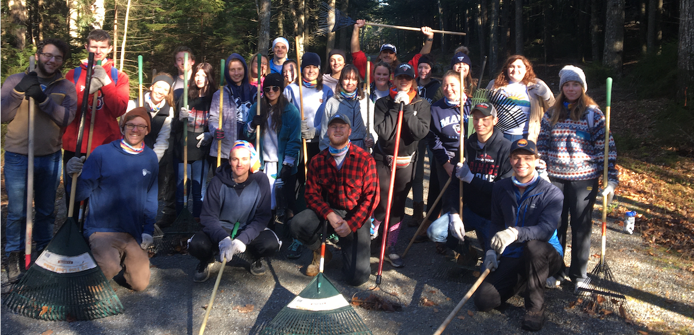

I am a site-leader for UMaine Alternative Breaks. Along with my co-site leader, Maegan, we will lead a group of about ten fellow students to Tonawonda, New York, to work at Kenmore Alliance - a service provider for homeless in that area.
At Kenmore, my group and I will be serving meals, providing clothes, refering people to the agency, reaching out to local schools and universities, and even going outside of Kenmore Alliance to go on a walk through that area, to give out food, clothing, and supplies to people out on the streets.